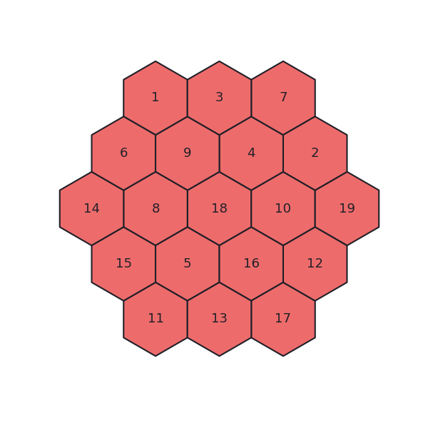
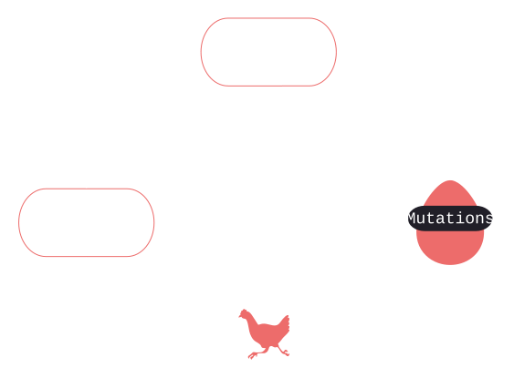
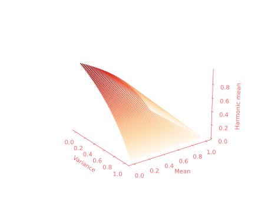
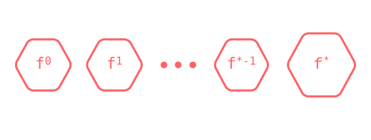
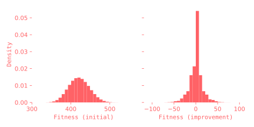
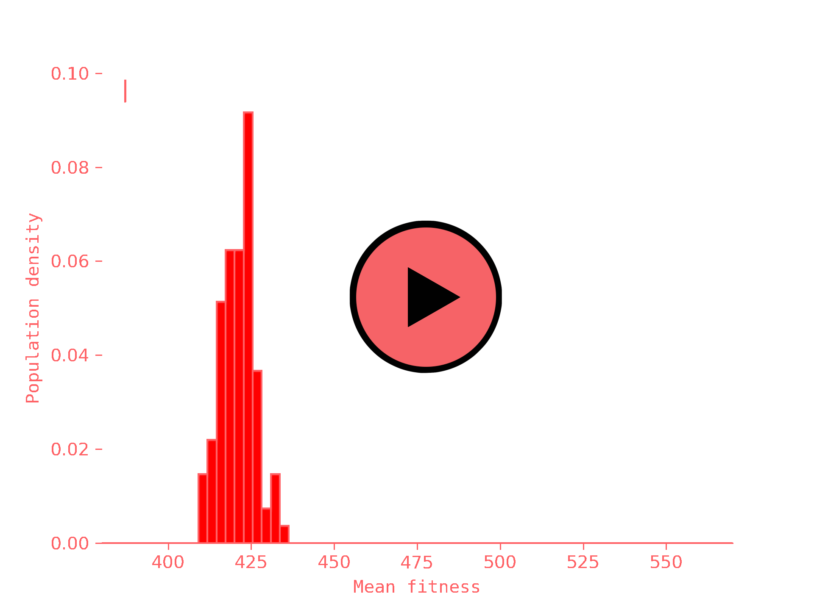
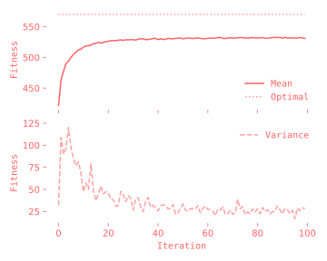
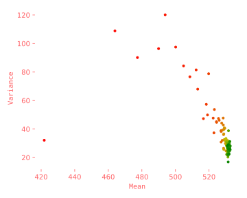

Solving the Magic Hexagon with an Evolutionary Algorithm
Sudoku on steroids⌗
Two years ago for Christmas, I got an ‘impossible to solve’ Magic Hexagon puzzle. Arranged in the right way, all 15 rows of the hexagon, horizontally and diagonally, have the same magic sum of 38. Hover over the one below and count for yourself.
What’s so puzzly about this then? The hexagon I got was not neatly printed on paper to demonstrate some odd mathematical property; it was an unnumbered jumbled up mess of smaller hexagons, a bit like the one above. There are 19!/6 ways to arrange the board, and only six valid arrangements due to the six-fold symmetry of the hexagon. After a few minutes of failing to get anywhere, it was clear this was a task fit for a machine. Evolutionary algorithms are perfect for the job.
Evolutionary algorithms⌗
The main ideas behind evolutionary alogrithms (EAs) are borrowed from evolution, defined as “any change across successive generations in the heritable characteristics of biological populations”, allowing for organisms to adapt to their current local environment resulting in both inter and intra diversity in species. Think brown bears and polar bears.  Illustrated above are the principles of Darwinian natural selection. During reporoduction, the genetic material or genotype of an organism is passed on to its offspring. The organism’s phenotype are manifestations of its genes, altering it’s appearance or behaviour. Natural selection operates not an an organism’s genes, but on the final product; it’s phenotype. It is the environment that shapes the organism, and individuals better suited to the environment are more likely to reproduce and pass on traits to offspring.
Artifical evolution and EAs take inspiration from their natural counterpart as a heuristic for finding solutions to hard, often NP, problems. EAs attempts to find an optimal state to a problem, and are characterised by a genetic representation of the state, a population of genes, a fitness function to evaluate each gene, a selection method for selecting candidate genes, a mutation method for mutating a pool of canditates and a replacement method for determining how the old population is updated. An example evolutionary loop of an EA is shown below. Due to the randomness of mutations, it is possible that the algorithm never converges! A convergence criterion is therefore also included to monitor the performance of the loop, stopping it if necessary.
while True:
# Create offspring population
candidates = select(population)
offspring = mutate(candidates)
# Update population
population = update_population(population, offspring)
# Convergence criterion
if check_convergence(population):
break
Implementation⌗
Armed with sufficient background in EAs, it is time to solve the impossible puzzle. First, we create a class for our solver and then define each of its components adhering to the principles of EAs. The algorithm only takes two parameters:
p_size:: the number of genes in the populationp_cand:: the proportion of candidate genes to select from the population
The thinking behind choosing the proportion of candidates as opposed to a the number of candidates as hyperparameter is to reduce it’s dependency on p_cand. An experiment with a population of 50 and 5 candidates vs. a population of 100 and 10 candidates is essentially the same experiment at different scales, since the population to candidate ratio is the same; 50:5 = 100:10 = 10:1. Change the proportion, and you have a new experiment.
import numpy as np
class MagicHexSolver():
global M
M = 38 # The magic number
def __init__(self,
p_size: int, # population size
p_cand: int # proportion of candidates
):
self.p_size = p_size
self.n_candidates = self.get_n_candidates(p_size, p_cand)
def get_n_candidates(self, p_size, p_cand):
# factors of p_size
cs = np.array([c for c in range(1, p_size+1) if p_size % c == 0])
# choose closest factor as n_candidates
return cs[np.abs(cs - int(p_size * p_cand)).argmin()]
Genetic representation & population
This is as simple as ‘flattening’ the board into a 1D array of integers to represent each tile. The tiles of the initial boards are assumed to be randomly placed, so the initial population of size p_size is instantiated with a simple list comprehension.
population = np.array([
np.random.permutation(19) + 1 for _ in range(self.p_size)
])
Fitness function
This part is a bit trickier, since each row of each board needs evaluating at each iteration, and there may be millions of iterations required until convergence! For-loops are inefficient and won’t do - Numpy indexing to the rescue.
Recall the goal of the puzzle: each row of the hexagon in every direction must sum to the same magic constant M. Notice that 5/15 rows can be obtained by taking each horizontal row. By then taking the diagonal rows of the hexagon from top to bottom left and from top to bottom right, all 15 rows can be addressed.
Broadcast indexing a board gene with a tedious map of each possible row results in a matrix of all 15 rows of that board. It is then easy to check whether each row results in the same sum.
There’s now one final catch: the rows of the hexagon aren’t the same length. This is dealt with by padding each row in the map with zeros, and making the 0ᵗʰ element of the board gene also 0 - hence why the board gene is of length 20 and not 19.
global ROW_MAP
ROW_MAP = np.array([
# Horizontal rows Reference hexagon indices
[1, 2, 3, 0, 0],
[4, 5, 6, 7, 0], # 1 2 3
[8, 9, 10, 11, 12], # 4 5 6 7
[13, 14, 15, 16, 0], # 8 9 10 11 12
[17, 18, 19, 0, 0], # 13 14 15 16
# Top -> bottom left 17 18 19
[1, 4, 8, 0, 0],
[2, 5, 9, 13, 0], # Notice how the indices to the left refer
[3, 6, 10, 14, 17], # to all 15 possible rows on the hexagon
[7, 11, 15, 18, 0],
[12, 16, 19, 0, 0],
# Top -> bottom right
[3, 7, 12, 0, 0],
[2, 6, 11, 16, 0],
[1, 5, 10, 15, 19],
[4, 9, 14, 18, 0],
[8, 13, 17, 0, 0]
])
# The population is modified to include a 0 at the 0ᵗʰ index of each gene.
zero_padding = np.zeros(self.p_size, dtype=np.uint8)[:,None]
population = np.hstack((zero_padding, population))
# Simply the opposite of fitness; the lower the cost, the higher the fitness
def get_cost(self, population):
row_sums = np.sum(population[:, ROW_MAP], axis=2)
row_diff = np.abs(M - row_sums)
return np.sum(row_diff, axis=1)
Selection & Cloning
After applying the fitness function above to each member of the population, the best n_candidates are selected. The candidates are then cloned, mutated, and the old population is replaced with spritely new boards.
def select_best(self, population):
# how many times to clone each candidate
cloning_factor = self.p_size // self.n_candidates
costs = self.get_cost(population)
fittest_indices = costs.argsort()[:self.n_candidates]
fittest = np.repeat(population[fittest_indices], cloning_factor, axis=0)
return fittest, costs.min() # also return the fitness of the best gene
Mutation
The solution to the puzzle lies somewhere in the search space of all possible boards. A naïve way to explore this space is to continuously swap two tiles on the board at random. After selecting a pool of candidate solutions, two random indices are simultaneously picked for each candidate and then swapped. In other words, every gene is mutated in the hope that some of them exhibit higher fitness or become pioneers in the unexplored search space.
def mutate(self, candidates):
# Don't swap the 0ᵗʰ index!
swaps = np.random.randint(1, 20, size=(2, self.n_candidates))
indices = range(self.n_candidates) # needed to index each gene - different to ':'
temp = candidates[indices, swaps[0]]
candidates[indices, swaps[0]] = candidates[indices, swaps[1]]
candidates[indices, swaps[1]] = temp
return candidates
Evolutionary loop
We now weave all of our functions in one evolutionary loop. Notice the similarity with the general EA algorithm described above. We’ll add an ‘optimization’ mode to the search for when we want to fine tune its parameters.
import time
def search(self, optimizing=False):
population = np.array([
np.random.permutation(19) + 1 for _ in range(self.p_size)
])
zero_padding = np.zeros(self.p_size, dtype=np.uint8)[:,None]
population = np.hstack((zero_padding, population))
candidates, cost = self.select_best(population)
# Keep track of the time and no. of iterations
time_start = time.time()
i = 0
while cost > 0: # convergence criterion
i += 1
population = self.mutate(candidates)
candidates, cost = self.select_best(population) # 'cost' is the evaluation
time_elapsed = time.time() - time_start
if optimizing: return i
else: # retrieve the best candidate - the solution to the puzzle
costs = self.get_cost(candidates)
best_candidate = candidates[costs.argsort()[0]]
display_board(best_candidate, i, time_elapsed)
Finally, we write method to display the board in a more readable way once (if) a solution is found.
def display_board(self, board, i, time):
# convert numbers to strings (with 0s in front of numbers < 10)
board_str = ['{}'.format(t) if t > 9 else '0{}'.format(t) for t in board[1:]]
template = '''
Solution found!
{} {} {}
{} {} {} {}
{} {} {} {} {}
{} {} {} {}
{} {} {}
{:.2e} iterations
{:.2e} seconds
'''
print(template.format(*board_str, i, time))
That’s all there is to it! Now to check if everything works… let’s plug in a population size and proportion of candidates.
src$ python -i magic_hexagon.py # run in interpretable mode
>>> hexagon = MagicHexSolver(p_size=100, p_cand=0.2)
>>> hexagon.search()
Solution found!
18 11 09
17 01 06 14
03 07 05 08 15
19 02 04 13
16 12 10
1.02e+06 iterations
1.05e+02 seconds
Just like that, our EA solved the unsolvable puzzle. Looking at the runtime, however, it’s clear there is some room for improvement. Can we find a better combination of the algorithm’s parameters, p_size and p_cand?
Parameter optimization⌗
A function’s hyperparemeters are like the hot and cold valves of a shower. Both valves need to be just right to get that perfect temperature. Together, the valves explore temperature space in the hope of finding the optimal temperature. Using p_size and p_cand as valves, the space we aim to explore is the EA’s efficiency space - that is, a space where each point addresses the average number of iterations needed to meet the optimal convergence criterion.
Performing parameter search is straightforward: run an experiment on every combination of the parameters and evaluate how well things went. This approach would make my supervisor wince. “Parameter search? how boring. Find the exact mathematical solution like a real scientist!” Sadly, when dealing with stochastic or nonlinear beasts (as is the case in neural networks), parameter search oftentimes is the simplest and least painful path to an optimal algorithm.
Since we’re dealing with a stochastic algorithm, we can only estimate the performance of the EA averaged over several runs. Selecting the optimal set of parameters, therefore, should be based on more than just the speed of finding a solution. The variance of our observations should also be taken into account; we aim to minimize both the variance and the mean of search iterations given a set of parameters. A harmonic mean is the way to go for this type of evaluation, and is defined as
\[ H(\mu, \sigma) = {\left(0.5 \left(\frac{1}{1 - \mu} + \frac{1}{1 - \sigma} \right) \right)^{-1}} \]
where the mean and variance \(\mu, \sigma \in [ε, 1] \) are both normalized beteween 1 and a tiny non-zero value.
It took 48 hours to average over 20 runs on 400 different parameter combinations. Once my CPU’s agony was over, I found an optimal set of paramers which gave a considerble improvement in search time.
>>> hexagon = MagicHexSolver(p_size=25, p_cand=0.0925)
>>> hexagon.search()
Solution found!
18 17 03
11 01 07 19
09 06 05 02 16
14 08 04 12
15 13 10
3.48e+03 iterations
2.26e-01 seconds
This leaves us with 293-fold increase in speed compared to previous choice of parameters. Not bad at all. At this point I should’ve called it a day, posted my findings, replaced my now damaged laptop’s battery and moved on to other puzzles. But curiousity got the better of me; I wanted to understand the statistical workings of the EA, and eventually predict its runtime. How hard could this be?
Further exploration⌗
We know how the algorithm works; keep mutating and evolving and eventually the optimal gene appears. But why does it find a solution? can we understand its runtime? I’ve spent the past week trying to unpack these questions (probably longer than I did building the algorithm) and the conclusion is, well, I can’t. If I did, things would look more like a paper than a blogpost. Nevertheless, I learnt a lot from the various headscratchers and pitfalls that took up my week, and have laid the groundwork for some interesting future experiments. My supervisor is right - parameter search is a bit boring. Chipping away at the opaque maths behind an EA’s convergent properties could give a more grounded justification for choosing its parameters. Better yet, characterizing an EAs runtime would allow for concrete comparisons between it and other algorithms. As I’ve come to learn, these tasks aren’t trivial (at all). The following ideas are just ideas; sadly not conclusions. They’ll serve as a landmark for me to come back to (eventually).
Thinking about convergence
To converge is to tend towards a definite limit. For us, that limit is the solution of the puzzle, the highest attainable fitness of any gene. We’ve already seen that our EA converged to a solution, but how can we be sure that it does so every new run? What is it about different sets of parameters that leads to exponentially longer and unreliable times taken to converge? Understanding the true runtime and convergent properties of EAs is a whole field in an of itself [1] and is doused in obscure probability theory. I took module on randomised runtime analysis last semester, spent the past week going over relevant lectures and parpers, and still barely understand how to apply some of these cryptic ideas to real, non-trivial problems. I decided to take a simpler route to gain an intuition as to what’s really going on under the hood of our EA.
Recall the gist of the algorithm; start with a population, select the top candidates, clone and mutate them, replace the population, repeat. To find a solution means to consistently choose the correct mutations until, like magic, the fish grows legs.
The figure above is an example of a Markov chain, and is a common and simple way to represent the evolution of an EA1. It shows that set of states with optimal fitness \( f^* \) is attainable by making the correct sequence of transitions \[ f^{i} \xrightarrow{P_{f+1}} f^{i+1} \] where \( P_{f+1} \) is the probability of increasing fitness from a given state. So far so good. But our algorithm isn’t elitist2, in the sense that fitness from population to population can drop - so we also need to incorporate the likelihood of dropping from one state to another. Sadly, things get even more complicated; for visual sinplicity, the diagram doesn’t include every transition mapping each state to every other one, i.e. \( P_{f+2} \), \( P_{f+3} \), etc., and swapping a tile can increase the fitness by more than one, so these also need to be considered. What a mess.
Monte-Carlo Sampling
We’re interested in \( P_{f > 0}(s, t_1, t_2) \); the probability that a random swapping of tiles \( t_1 \in T_1 \) and \( t_2 \in T_2 \) improves a state \( s \in S \)’s fitness. There are three discrete random variables to take into account here: \(T_1\), \(T_2\) and \(S\):
- \(P_{S}(s) = \frac{1}{19!} \) :: starting with a board \( s \)
- \(P_{T_1}(t_1) = \frac{1}{19} \) :: choosing the first tile \( t_1 \)
- \(P_{T_2}(t_2) = \frac{1}{18} \) :: choosing the second tile \( t_2 \)
From this we can see that there are (19!* 19 * 18) ÷ 6 possible probabilities to account for that make up the ‘mutation distribution’ (dividing by 6 for symmetry). In other words, just shy of the number of grains of sand on Earth. I don’t have the millions of years it would take for my laptop to compute each of them. Fortunately, we can use Monte-Carlo sampling (the same principle behind stochastic gradient descent) to estimate the probability distribution:
\[ \mathbb{E}[P_{f > 0}] ≈ \frac{1}{N} \sum_S \sum_{T1} \sum_{T2} P_{f > 0}\left(s, t_1, t_2 \right) \]
After a few samples, say, 500,000,000, we obtain reasonable estamates of the starting distribution of fitness and the initial fitness improvement \( P_{f > 0}(s, t_1, t_2) \):
This gives an estimate for \( \mathbb{E}[f] ≈ \) 425 and for \( \mathbb{E}[P_{f > 0}] ≈ \) 0.38. In other words, the average initial starting fitness of a population is roughly 425, and there is a roughly 2/5 chance of improvement in fitness when a board from this population is mutated. If I someday manage to work out how to model the runtime of this mysterious EA, maybe Monte-Carlo sampling could be a way to validate statistical models?
Observing convergence
In [2], it was noted that the runtime analyis of EAs has to be modified to the time when they coverge around optimal solutions. It’s relatively easy to get close to solving a problem, and the optimal solution is more likely to reside around states with better fitness. When running the EA, the same rapid increase in fitness is observed in the first few runs. I wanted to see for myself how the average distribution of fitness over many populations changed over time, so I varied the number of iterations the EA could run for and recorded the average final distribution of fitness.
The results allow us to watch how many populations behave. It’s clear that they converge to some fitness space that’s doesn’t quite contain the optimal solution. The properties of the new distribution (in green) are also essentially identical to its unfit predecessor.
There also apprears to be a relationship between the mean and variance of the distribution as it gradually improves, which is better shown on the phase-space scatter plot of mean against variance. Using dynamical systems terms, there is an ‘attractor’ on the distribution’s mean and variance at the point of convergence.
 If we assume that a population’s fitness distribution is Gaussian, maybe the convergence of its mean and variance could be modelled as a set of ‘statistical’ ordinary differential equations?
Wrapping up⌗
Clifford W. Adams started work on finding a mathematical solution to the Hexagon in 1910 and eventually solved it in 1957. He saw the puzzle in a mathematical journal, wondered how it worked, and proceeded to go down a 47-year-deep rabbit hole. Our EA found solved the puzzle in less than a second, but solutions have fractal borders. I ended up ending more questions than I came in with. I hope that someday I’ll write a follow-up to this problem after a lot more background. If you’re curious to poke around at the algorithm yourself, feel free. I’d love to see what you come up with!
I’d like to thank my housemates for their insights and for putting up with my relentless (maybe a little obsessive) verbal thinking, my girlfriend for keeping me from going too far down the rabbit hole and my friend Nicola Mendini, who love’s puzzles as much as I do, and without whom I would still be shuffling tiles around by hand. Above all, I’d like to thank my dad for surprising me with this hexagon for Christmas - I told you I’d solve it.
Future work⌗
- Applying the EA to a simpler problem, say, OneMax3 and estimating it’s runtime with Drift Analyis [3].
- Modelling how the EA converges to its sub-optimal fitness distribution, possibly though ODEs.
- Using Monte-Carlo sampling techniques to estimate a better Markov chain model.
- Applying the EA to a more challenging problem.
References⌗
[1] Katoch, S., Chauhan, S.S. & Kumar, V. A review on genetic algorithm: past, present, and future. Multimed Tools Appl 80, 8091–8126 (2021). https://doi.org/10.1007/s11042-020-10139-6
[2] J. He and G. Lin, “Average Convergence Rate of Evolutionary Algorithms,” in IEEE Transactions on Evolutionary Computation, vol. 20, no. 2, pp. 316-321, April 2016. https://doi.org/10.1109/TEVC.2015.2444793
[3] Oliveto P.S., Witt C. (2008) Simplified Drift Analysis for Proving Lower Bounds in Evolutionary Computation. In: Rudolph G., Jansen T., Beume N., Lucas S., Poloni C. (eds) Parallel Problem Solving from Nature – PPSN X. PPSN 2008. Lecture Notes in Computer Science, vol 5199. Springer, Berlin, Heidelberg. https://doi.org/10.1007/978-3-540-87700-4_9
[4] Lehre, P. K. (2011). Fitness-levels for non-elitist populations. In Genetic and Evolutionary Computation Conference, GECCO'11 (pp. 2075-2082) https://doi.org/10.1145/2001576.2001855
Footnotes⌗
-
There exist better models for this, such as Artifical Fitness Levels (AFLs) [3] or Drift Analyis [4] - the Markov chain is used to simply to illustrate a point. ↩︎
-
From a later experiment, it was found that an elitist implimentation of the EA which never removed its top candidate performed worse than one that didn’t. There are a few reasons for why I think this is. Firstly, our non-elitist algorithm allows for the same tile to be selected, i.e. a mutation with replacement that no impact on performance with a reasonable probablility. Top candidates, therefore, have a chance to be unaffected and placed back into the population as they were found. Modifying the EA so that it must swap tiles during mutation has a significantly worse impact on performance. It can be concluded that a blend of elitism and non-elitism gives a good exploration vs. exploitation tradeoff. ↩︎
-
OneMax aims to find a binary string of all ones starting from a random binary string. Each mutation flips a bit at random. I’ve already started this experiment, and the EA is very capable of solving OneMax. Given the correct parameters, the EA’s performance on OneMax is essentially identical to the Hexagon puzzle! While the results are promising, this post has to wrap up somewhere. ↩︎